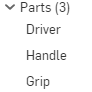

Lesson2-1課程內容 << Previous Next >> Lesson4-1課程內容
Lesson3-1課程內容
- 介紹特徵布林運算的聯集與差集
- 練習HW3-2來熟悉以上介紹的技巧
★需要注意的事!在使用特徵進行一個草圖的填料時，必須在"新"的這個欄位下進行編輯，否則這個零件將會跟上一個零件合為一體，無法分開編輯。
(小撇步:要怎麼區分哪些是同一part，只要你零件上的顏色就可以知道了。
以下面這張圖為例，有三個顏色，所以可以明確知道有3個part。)

Lesson2-1課程內容 << Previous Next >> Lesson4-1課程內容